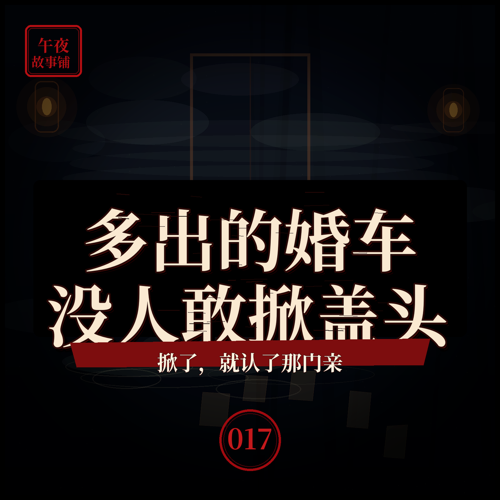

婚车队半路多出一辆，新娘的盖头没人敢掀
迎亲迎的是喜，可有些喜事，不是给活人办的

简介
表哥结婚那天，迎亲的车队是六辆。从女方家出来时，跟车的人却数出了七辆。那多出来的一辆，蒙着红绸，跟在队尾，不快不慢。到了婆家，红绸车里也下来一个穿嫁衣、盖红盖头的新娘。两个新娘，一模一样，没人分得清哪个是真的。老人说，谁先掀错了盖头，谁就把那门亲，认下了。本故事为原创虚构民间异闻演绎，请勿代入现实。
标签
- 民间故事
- 异闻
- 悬疑
- 怪谈
- 睡前故事
- 阴婚
迎亲迎的是喜，可有些喜事，不是给活人办的

表哥结婚那天，迎亲的车队是六辆。从女方家出来时，跟车的人却数出了七辆。那多出来的一辆，蒙着红绸，跟在队尾，不快不慢。到了婆家，红绸车里也下来一个穿嫁衣、盖红盖头的新娘。两个新娘，一模一样，没人分得清哪个是真的。老人说，谁先掀错了盖头，谁就把那门亲，认下了。本故事为原创虚构民间异闻演绎，请勿代入现实。